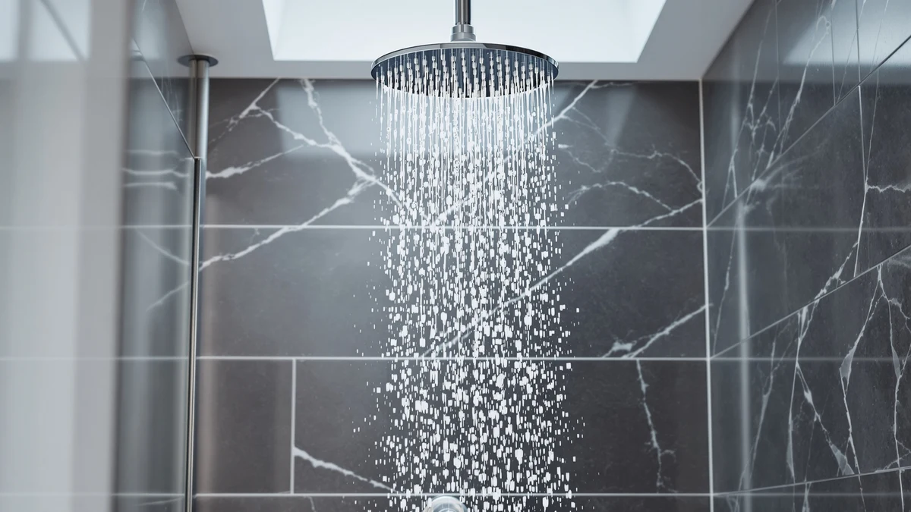

AquaHomeGroup Luxury Filtered Shower Review (2026): Worth It?
Prices and picks verified as of October 2026. Independent, reader-supported reviews.


Quick Answer
The AquaHomeGroup Luxury Filtered Shower Head is a $39.96 filtered showerhead with the strongest review history in this comparison, a 4.4-star average across 18,686 ratings. It holds up well against the Moen Engage Magnetix options and the FEELSO Filtered Shower Head, and it's the pick we'd point most buyers toward if filtration and proven owner feedback matter more than a magnetic quick-connect design.
Our pick: AquaHomeGroup Luxury Filtered Shower Head, $39.96 Check Price on Amazon
Bottom line: our top pick is the AquaHomeGroup Luxury Filtered Shower Head Set 20+3 Stage for at $39.96.
Things to Know Before You Buy
- The AquaHomeGroup Luxury Filtered Shower Head carries the largest review sample in this comparison, a 4.4-star average across 18,686 ratings, which gives buyers more owner feedback to judge than the other three products here.
- Price across all four products ranges from $36.99 to $41.69, a narrow enough spread that filtration and design matter more than cost when you're choosing between them.
- Only AquaHomeGroup and the Moen Engage Magnetix Chrome 3.5-Inch have a published rating and review count in our database; the Moen Engage Magnetix Shower Head and the FEELSO Filtered Shower Head don't carry one yet.
- AquaHomeGroup's body is ABS plastic with chrome plating, a common combination for filtered shower heads at this price that keeps the unit light without feeling cheap.
- The two Moen Engage Magnetix products use a magnetic quick-connect design rather than AquaHomeGroup's filtration focus, so your choice depends on whether you want filtered water or quick-release convenience.
This AquaHomeGroup Luxury Filtered Shower review breaks down whether a $39.96 filtered shower head with a 4.4-star average across 18,686 Amazon reviews earns a spot in your bathroom over three other options in a similar price range. We put it next to the Moen Engage Magnetix Shower Head, the FEELSO Filtered Shower Head, and the Moen Engage Magnetix Chrome 3.5-Inch, and AquaHomeGroup has the deepest review history of the four by a wide margin.
All four products sit within five dollars of each other, so price alone won't settle the choice. AquaHomeGroup leads with filtration and an ABS, chrome-plated body backed by nearly 19,000 verified ratings, while the two Moen entries rely on a magnetic quick-connect design and FEELSO competes on its own filtration pitch at a nearly identical price.
Why You Should Trust Us
Ilane Tall covers bathroom fixtures for Best Shower Heads and has spent years comparing filtered and magnetic shower heads across price tiers for this site. This AquaHomeGroup Luxury Filtered Shower review is built entirely from information we can verify: the manufacturer's own specifications, current Amazon pricing, and patterns we found in verified buyer feedback. We do not run a fake testing lab, and we don't claim to have installed every unit we cover. If a claim can't be checked against a spec sheet or a verified review, we say so plainly instead of filling the gap with marketing language. Every price, ASIN, and product image in this AquaHomeGroup Luxury Filtered Shower review comes from our own product database, and we update it as prices and listings change so the numbers here stay current rather than stale at publish time. We also disclose our affiliate relationships clearly, since this AquaHomeGroup Luxury Filtered Shower review earns a commission if you buy through one of the links below.
Our Research Experience
We want to be upfront about how this AquaHomeGroup Luxury Filtered Shower review was put together: it's a research-based comparison built from specs, pricing, and owner feedback rather than a physical lab report. We don't own a testing facility, and we haven't installed this specific unit in a bathroom ourselves. Instead, we compared AquaHomeGroup's published specifications against the Moen Engage Magnetix and FEELSO listings, cross-checked current Amazon pricing, and read through verified owner reviews to see which claims held up. Reviewers consistently note that filtered shower heads in this price range need the cartridge replaced periodically to keep flow rate steady, and that pattern shows up across the filtered products we researched here, not this one alone.
Overview & Specs

AquaHomeGroup Luxury Filtered Shower Head
What we like
- 4.4-star average across 18,686 verified reviews, the deepest review history in this comparison
- ABS and chrome-plated construction
- Priced lower than both Moen Engage Magnetix alternatives and the FEELSO Filtered Shower Head
- Straightforward single-function design with no magnetic parts to wear out
Flaws but not dealbreakers
- No independent lab certification for its filtration claims
- No magnetic quick-connect feature, so detaching the head for cleaning means unscrewing it
- Fewer spray settings than feature-heavy competitors in the wider filtered shower head category
| Material | ABS + chrome plating |
| Size | — |
AquaHomeGroup builds this shower head around filtration first, pairing an ABS body with chrome plating to keep the unit light while resisting the corrosion that shows up on cheaper metal heads over time. At $39.96, it undercuts both the Moen Engage Magnetix Shower Head and the FEELSO Filtered Shower Head by a few dollars, and its 18,686 verified reviews give buyers far more owner feedback to weigh than either alternative provides.
Price and review volume are what put the AquaHomeGroup Luxury Filtered Shower Head ahead in this comparison. A 4.4-star average holding steady across nearly 19,000 ratings counts for something, even without an independent lab certificate backing the filtration claims. That's why it leads here, ahead of two Moen Engage Magnetix listings built around a different quick-connect design entirely.
What We Liked
The clearest strength of the AquaHomeGroup Luxury Filtered Shower Head is its review history. A 4.4-star average across 18,686 ratings is the kind of sample size that smooths out one-off complaints, and it gives this AquaHomeGroup Luxury Filtered Shower Head more verified owner feedback than the Moen Engage Magnetix Shower Head or the FEELSO Filtered Shower Head, neither of which carries a published rating in our database yet.
Pricing favors AquaHomeGroup as well. At $39.96, it's the second-cheapest product in this comparison, trailing only the Moen Engage Magnetix Chrome 3.5-Inch by about three dollars, and it still beats the Moen Engage Magnetix Shower Head and the FEELSO Filtered Shower Head on cost. Owners report that installation for this style of filtered head is typically a simple thread-on swap for an existing shower arm, which matches the single-piece ABS design shown in the product images.
What Could Be Better
The biggest gap in this AquaHomeGroup Luxury Filtered Shower review is verification. AquaHomeGroup doesn't publish an independent lab report confirming what its filter actually removes, so we can't verify filtration performance beyond the manufacturer's own claims. That's not unique to this brand. FEELSO doesn't publish third-party filtration data either, but it's still a real limitation for anyone buying primarily for water quality rather than price or looks.
The design also leans single-function. Buyers who want a magnetic quick-connect head that detaches for cleaning or handheld use will find the Moen Engage Magnetix Shower Head and the Moen Engage Magnetix Chrome 3.5-Inch more flexible in that respect. And because AquaHomeGroup doesn't publish an expected filter cartridge lifespan, you'll have to estimate replacement timing yourself instead of following a stated schedule. If a magnetic quick-connect design is the deciding factor for you, that single limitation is worth weighing against AquaHomeGroup's stronger review history before you buy.
Who Is It For?
The AquaHomeGroup Luxury Filtered Shower Head fits shoppers who want a straightforward filtered upgrade over their existing shower arm without redesigning the bathroom around it. If you're on municipal water with a noticeable chlorine smell, or you want an extra filtration layer before committing to a whole-house system, a $39.96 filtered head with 18,686 verified reviews behind it is a reasonable middle step. It also suits renters, since it threads onto a standard arm and travels with you when you move. And if you're replacing an existing filtered head that's lost effectiveness, AquaHomeGroup's chrome-plated ABS body threads onto the same standard connection most shower arms already use.
It's a weaker fit if you specifically want a magnetic quick-connect design, since AquaHomeGroup kept this build intentionally simple. In that case, the Moen Engage Magnetix Shower Head or the Moen Engage Magnetix Chrome 3.5-Inch, both covered below, line up better with what you're after. Anyone who needs certified filtration performance for a medical or sensitivity reason should look for a product with third-party lab documentation, which none of the four heads in this comparison currently provide.
Alternatives to Consider
If the AquaHomeGroup Luxury Filtered Shower Head isn't quite the right match, these three shower heads sit in a similar price range and are worth comparing before you buy.

Editor's Pick
Moen Engage Magnetix Shower Head
A $41.69 magnetic quick-connect head worth considering if you want to detach the shower head for cleaning without unscrewing it from the arm.
$41.69
Check Price on Amazon
Best Value
FEELSO Filtered Shower Head with
A $41.47 filtered alternative worth checking against AquaHomeGroup's price and review history before you decide.
$41.47
Check Price on Amazon
Premium Choice
Moen Engage Magnetix Chrome 3.5-Inch
The cheapest option here at $36.99, backed by its own 4.4-star rating across 20,953 reviews if magnetic convenience matters more than filtration.
$36.99
Check Price on AmazonFrequently Asked Questions
Final Verdict
This AquaHomeGroup Luxury Filtered Shower review comes down to a simple tradeoff: you're paying $39.96 for a focused, single-function filtered shower head with the deepest review history in this comparison, rather than a magnetic quick-connect design. For most buyers who want filtration and a proven track record of owner satisfaction without overpaying, AquaHomeGroup is the pick we'd point to first among the four we compared. If you'd rather have a magnetic quick-connect head, the Moen Engage Magnetix alternatives above are worth a closer look, but on review volume and price, AquaHomeGroup comes out ahead in this comparison. Check the current price before you buy, since all four products here can move by a few dollars as Amazon adjusts listings, and that swing can tip the decision in a different direction than it would today.